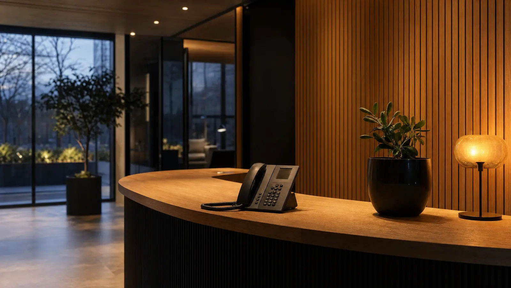

AI-receptionist voor bedrijven: 24/7 professioneel, automatisch antwoord
Een AI-receptionist neemt elke oproep aan, plant afspraken en categoriseert leads, 24/7, ook buiten kantooruren. Zo werkt het bij Tessar, en dit kost het.

Elke dag missen bedrijven telefoongesprekken. Een klant belt na 17:00 uur, niemand neemt op. Een potentiële opdracht komt binnen als je niet op kantoor bent. De telefoon rinkelt, maar iedereen is in vergadering. Het gevolg: verloren inkomsten, gefrustreerde klanten en zelfs duizenden euro's per jaar extra personeelskosten om dit probleem op te lossen.
Een AI-receptionist werkt 24/7, neemt elke oproep professioneel aan, stelt de juiste vragen, plant afspraken in en zorgt ervoor dat niets verloren gaat. Geen menselijke fout, geen gemiste kansen, geen burn-out van je team. Dit is hoe moderne bedrijven hun telefoon-inefficiëntie oplossen, zonder dat het de begroting overschrijdt.
Waarom een AI-receptionist voor jouw bedrijf?
Veel Nederlandse mkb-bedrijven werken nog steeds als volgt: telefoon gaat over, iemand moet opnemen. Buiten kantooruren? Pech. Tijdens lunch? Nog meer gemiste oproepen. En als je geen fulltime receptionist kunt betalen, gaat veel geld verloren aan slechte eerste indruk, gemiste leads en klanten die naar de concurrent bellen.
Dit is niet alleen frustrerend, maar het kost ook geld.
Een AI-receptionist neemt deze last volledig over:
- Gemiste oproepen voorkomen: De telefoon wordt altijd opgenomen, dag en nacht, weekend of feestdag.
- Administratieve taken automatiseren: Afspraken worden rechtstreeks in je agenda ingevoerd, geen handmatig uitschrijven meer.
- Leads automatisch doorgeven: Potentiële klanten worden via je CRM-systeem geregistreerd zodra zij bellen.
- Professioneel imago: Klanten en prospects beleven een verzorgde, vriendelijke maar efficiënte telefoonervaring.
- Kostenbesparing: Een fulltime receptionist kost snel €25.000–€35.000 per jaar. Een AI-receptionist een fractie daarvan.
Voor mkb-bedrijven in diensten, installatiebedrijven, zakelijke dienstverlening of consultancy is dit een game-changer: bereikbaarheid zonder extra personeel.
Wat doet een AI-receptionist voor bedrijven?
Een AI-receptionist voert niet alleen telefoon op, maar werkt ook als volwaardig teamlid in je bedrijfsproces:
Oproepen opnemen en doorverbinden. Zodra iemand belt, neemt de AI-receptionist professioneel op. Afhankelijk van je voorkeur stelt zij vragen: "Wat kan ik voor u doen?", "Wie zoekt u?", "Waar gaat uw vraag over?" Aan de hand van het antwoord stuurt zij de beller door naar de juiste persoon, afdeling of voicemail.
Afspraken rechtstreeks inplannen. Een klant wil een afspraak? De AI-receptionist vraagt naar beschikbare datum en tijd, checkt je agenda real-time en bevestigt de afspraak meteen. Geen e-mailwisseling, geen heen-en-weer ping-pongen. Klaar.
Informatie verzamelen. Bij binnenkomende vragen verzamelt de AI-receptionist relevante informatie: bedrijfsnaam, contactpersoon, onderwerp van het bericht. Dit wordt automatisch gestructureerd in je CRM opgeslagen.
Buiten kantooruren beschikbaar zijn. Na 17:00 uur of op zondagmorgen: de AI-receptionist werkt door. Klanten kunnen berichten achterlaten, afspraken maken of doorverbonden worden naar een noodlijn, precies zoals jij dat instelt.
Leads automatisch categoriseren. Niet alle bellers zijn even belangrijk. De AI-receptionist herkent zakelijke vragen van telemarketing, routineaanvragen van urgente hulpvragen. Dit helpt je team prioriteiten stellen.
Berichten doorgeven. Gesprekssamenvattingen worden automatisch per e-mail of notificatie naar je team gestuurd. Niets valt door de mazen.
Hoe verschilt Tessar van andere AI-receptionisten?
Het aanbod aan AI-receptionisten groeit, maar veel oplossingen zijn ontworpen voor grote organisaties, internationale markten of hebben een generieke aanpak. Tessar kiest bewust voor het Nederlandse mkb.
Gebouwd voor mkb-workflows. Tessar snapt dat een reparatiebedrijf niet werkt als een makelaarskantoor, en een consultancy anders plant dan een kapsalon. Daarom is Tessar volledig configureerbaar naar je bedrijfstype en werkwijze, zonder ingewikkeld programmeerwerk.
Nederlands taalgevoel. Een AI-receptionist met Nederlands taalgevoel maakt verschil. Tessar begrijpt context, dialectnuances en bedrijfsspecifiek jargon. Dit leidt tot natuurlijkere gesprekken en hogere klanttevredenheid, niet dat robotachtige gevoel van generieke systemen.
Naadloze integratie met je bestaande tools. Je werkt waarschijnlijk al met Google Calendar, Outlook, HubSpot, Zoom of een ander CRM-systeem. Tessar sluit direct aan op wat je al gebruikt. Geen gedoe met API-experts of DevOps. Plug-and-play integratie met lokale systemen staat centraal.
Persoonlijke ondersteuning op Nederlands. Bij vragen of configuratie helpt een Nederlands team dat je bedrijf snapt. Niet een chatbot, niet outsourced callcentersupport op andere tijdzones. Lokale kennis.
Realistische implementatie. Tessar belooft niet dat alles in één dag klaar is. Tessar helpt stap voor stap: eerst de telefoon opzetten, dan afspraken, dan CRM-integratie. Rustig, professioneel, op maat.
Kosten en implementatie
Prijs-kwaliteitverhouding voor het mkb. Het grootste voordeel van een AI-receptionist is kostenbesparing. Een fulltime receptionist in Nederland kost bruto €25.000–€35.000 per jaar, plus arbeidsmarkt-overhead. Een AI-receptionist werkt naar gebruik en tijd, veel voordeliger voor kleine tot middelgrote bedrijven.
Tessar werkt met een schaalbaar model: je betaalt naar hoeveel oproepen je afhandelt en welke features je gebruikt. Dit betekent dat startups dezelfde voordelen genieten als gevestigde bedrijven, zonder dat je van dag één een groot budget nodig hebt.
Setup en integratie. De inrichting van een AI-receptionist vereist niet veel tijd. Typische stappen:
- Configuratie van je bedrijfsgegevens: Bedrijfsnaam, logo, werkuren, afdelingen (dit duurt een paar uur).
- Integratie met agenda en CRM: Tessar sluit aan op je bestaande tools (Google Calendar, HubSpot, etc.). Meestal voltooid in één dag.
- Test-fase: Je test enkele inkomende gesprekken, stelt details bij, ziet hoe klanten reageren.
- Live-schakeling: Je telefoon wordt volledig overgeschakeld op de AI-receptionist.
De hele inrichting duurt doorgaans één tot twee weken, afhankelijk van je systemen. Dit is veel sneller dan een nieuwe medewerker aanstellen en trainen.
Geen verborgen kosten. Tessar is transparant over kosten. Je betaalt voor: aantal oproepen per maand, opslagcapaciteit en integraties. Geen setup-fee, geen minimale contractperiode en geen gedoe.
Hoe begin je met je AI-receptionist?
Als je dit artikel leest, vroeg je je waarschijnlijk af: "Hoe sluit ik dit aan? Hoe complex is dit?" Het antwoord is eenvoudiger dan je denkt.
Stap 1: Demo en adviesgesprek. Je spreekt met een Tessar-specialist die naar je bedrijf luistert. Hoeveel oproepen krijg je gemiddeld per dag? Wat zijn je werkuren? Welke systemen gebruik je al? Op basis hiervan laten wij zien wat voor jou mogelijk is.
Stap 2: Gratis proefperiode. In plaats van direct te betalen, test je Tessar met je échte nummers en echte klanten. Gratis, gedurende twee weken. Zo ervaar je zelf of dit voor je werkt.
Stap 3: Configuratie en training. Als je "ja" zegt, stellen wij samen je AI-receptionist in. Dit kost minimale inzet van jouw kant: je geeft informatie, Tessar regelt de rest.
Stap 4: Live en optimalisatie. De receptionist gaat live. In de eerste maanden verfijnen wij de instellingen naar wat werkelijk werkt in je bedrijf.
De hele reis van kennismaking tot live is ontworpen om snel, stressvrij en zonder risico te zijn. Je kunt altijd stoppen, geen drama.
Veelgestelde vragen over AI-receptionisten
Wat gebeurt er met mijn gespreksgegevens? Zijn die veilig?
Je gesprekken en klantgegevens worden versleuteld verwerkt en AVG-bewust behandeld. Je bepaalt zelf wie binnen je team toegang heeft tot welke informatie.
Kan de AI-receptionist ook met mijn bestaande telefoonsysteem werken?
In de meeste gevallen ja. Tessar integreert met moderne telefoonproviders en centrale telefoonsystemen (VoIP, Asterisk, etc.). In het adviesgesprek checken wij je setup en bevestigen wij compatibiliteit.
Hoe lang duurt het voor alles live gaat?
Van eerste gesprek tot live: één à twee weken, mits je snel keuzes maakt. Setup zelf duurt meestal één tot twee dagen.
Werkt dit voor alle bedrijfstypen?
Tessar werkt goed voor diensten, retail, installateurs, consultancybureaus, makelaars, ziekenhuizen (administratie), advocaten en nog veel meer. Niet geschikt voor bedrijven waar elke klantoproep erg complex is en veel handmatige escalatie vereist. Dat vereist menselijk oordeel.
En als ik niet tevreden ben?
Je kunt stoppen wanneer je wilt. Er is geen lange contractverplichting. De eerste twee weken zijn gratis, dus je riskeert niets.
Kan de AI-receptionist ook in het Engels werken?
Ja. Tessar ondersteunt Nederlands, Engels en enkele andere talen. Relevant voor bedrijven met internationale contacten.
Een AI-receptionist is niet toekomstmuziek meer. Het is werkelijkheid waar veel Nederlandse mkb-bedrijven al voordeel van ondervinden. De vraag is niet meer of je dit nodig hebt, maar hoe snel je van gemiste oproepen en administratieve ballast af wilt.
Tessar is ontworpen precies voor jou: snelle implementatie, Nederlandse voorkant, betrouwbare automatisering, betaalbaar.
Klaar om je telefoonprobleem op te lossen? Laat je gegevens achter en plan een gratis demo in. Wij bellen je terug met concrete antwoorden voor je bedrijf.
Klaar om je telefoonprobleem op te lossen?
Plan een gratis kennismaking van 30 minuten. We bekijken samen hoeveel oproepen je nu mist en wat een AI-receptionist daaraan verandert.
Neem contact op Plan gratis demo